CS184/284A Fall 2026 Homework 3 Write-Up
Names: Stephen Park, Connor Lu
Link to webpage:
https://cal-cs184-student.github.io/hw3-o-0-hmmmmm-huhhhh-writeup/
Link to GitHub repository:
https://github.com/cal-cs184-student/hw3-o-0-hmmmmm-huhhhh
Overview
In this assignment we implemented a path tracer. This involves generating and throwing rays, then calculating
the amount of direct and then indirect light that reaches the camera through these points. We also implemented
BVHs to accelerate the ray tracing process, and adaptive sampling to speed up high quality renders.
Part 1: Ray Generation and Scene Intersection
To begin we actually need to generate rays that travel from the origin of the camera into the scene. To do this
we consider a coordinate system where the origin is the camera origin and the image plane lies at (0,0,-1) with
an associated FOV. From here we make a function that takes in a normalized x and y (ranges from 0 to 1) position
along the camera sensor and translates it to a camera space vector. To do this we get the min and max along each
axis, multiply max minus min by x and y, then add the min back along each axis.
Then we use a rotation matrix to transform this direction into world space.
Next we need to actually sample pixels in our scene. To do this we use a Monte Carlo estimate by throwing a set
number of random rays that lie within that pixel. In other words, for a pixel (x, y) we generate n random
offsets between 0 and 1 to create our samples. Then we use these samples to generate rays and then estimate the
amount of light at those points. Finally, we sum this and return an average. Notably however we haven't done
this yet, in fact we can't intersect with anything in the scene yet!
To do this we need to start off by detecting triangle intersections, we chose to implement the Möller-Trumbore
intersection algorithm. This algorithm can be understood from the point of view of a system of equations. To
begin we can write a point on the triangle with barycentric coordinates being \(P=\alpha A+\beta B+\gamma C\),
which can be reorganized as follows:
$$
\begin{align}
P&=(1-\beta - \gamma)A + \beta B + \gamma C\\
P&=A + \beta(B-A)+\gamma(C-A)
\end{align}
$$
Notably the point we are looking for can be written as the origin of the ray + \(t\) times the direction, so
let's set up a system of equations.
$$
\begin{align}
O+tD&=A + \beta (B-A)+\gamma(C-A)\\
O-A &= -tD + \beta (B-A)+\gamma(C-A)\\
\end{align}
$$
Finally we can simply apply Cramer's rule to find \(\beta\), \(\gamma\) and t. As long as t is with min and max t we update max_t to our t and continue.
Through these we can find the surface normal using the barycentric coordinates as simply \(\alpha\cdot n_1 +
\beta\cdot n_2 + \gamma\cdot n_3\).
Next sphere intersections, for this I took the time to read the
Wikipedia page to find \(\nabla\)
as the dot product between the ray direction and the difference between the ray origin and the sphere origin
squared, subtracted by the norm squared of the ray origin minus the sphere origin subtracted by the radius
squared. As an equation and not messy words:
$$
\nabla = (d\cdot(r_o-s_o))^2-(||r_o-s_o||^2-r^2)
$$
If nabla is less than zero there is no intersection, otherwise there is either one or two (it perfectly grazes
the edge or it happens in two points).
We can find the t's these occur at as: \[t=-(d\cdot(r_o-s_o)) \pm \sqrt{\nabla}\]
We can use these to find the min and max points of intersection. As long as the t is within the max and min t range we
always take the min. Otherwise we take whichever fits.
Below are some starter renders!
|
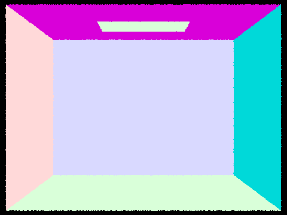
Empty Cornell box
|
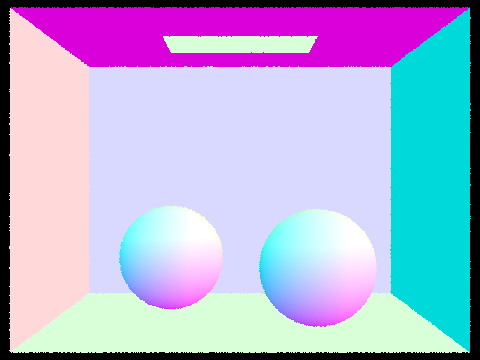
Cornell box with spheres
|
|
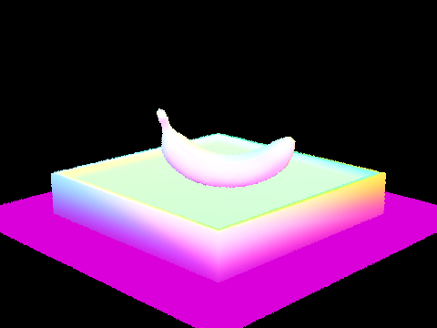
A banana
|
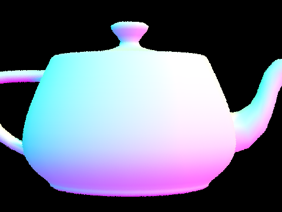
A teapot
|
Part 2: Bounding Volume Hierarchy
The BVH construction algorithm is a recursive algorithm that has 2 main cases, the base case for a number of
primitives less than or equal to max_leaf_size, and the recursive case of making a BVH node with a left and a
right node by recursively calling construct_bvh after splitting the primitives. So in my construction algorithm,
I first check the base case by having a for loop that counts the number of primitives and creates a full
bounding
box that
expands around all of them. Then I check if the number of primitives is less than or equal to the max_leaf_size
and return a new node with these primitives. However, if the number of primitives is larger, this leads us to
the
recursive case. The recursive case is special because we needed to choose a good heuristic for defining a
splitting
point. My initial design had a poor heuristic in combination with a bad fallback policy, where I found the
longest axis of the bounding box of all the
primitives and took the midpoint of that axis as the split point. For the fallback case, if one of the split
vectors was empty, I just made the node into
a leaf. While this implementation was simpler, it led to very bad performance especially from my fallback which
happened with my heuristic since the bounding box of the primitives can be defined by one super large
primitive and it could create a leaf with far more than max_leaf_size primitives because it gives up trying to
split it. This led my runtime for rendering CBbunny with 64 samples per pixel and 5 bounces to take over 20
minutes.
In the end, I changed this heuristic to greatly improve the performance of the renderer by instead expanding the
bounding box based on the centroid of each primitive and then as a fallback, splitting the primitives list in
the middle
after sorting it based on the centroid coordinate on the defined axis previously. To define my algorithm more
concretely, with the bounding box of all the centroids, I determine the longest axis between xyz of the bounding
box and find
the midpoint and that defines my split. Then I push the primitive in either the left or right list depending on
if it is less than the split point for left and else for right. When one side is empty, I do the fallback case:
I sort the primitives
by their centroid coordinate along that axis and put the first half in left and the second half in right.
Then I copy the left vector followed by the right vector back into the primitive list, and set node->l and
node->r to recursive calls on the two resulting sub-ranges.
|
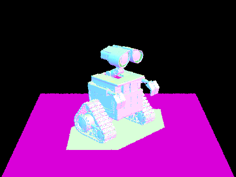
wall-e.dae (240,326 triangles)
|
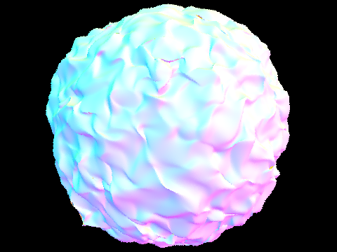
blob.dae (196,608 triangles)
|
|
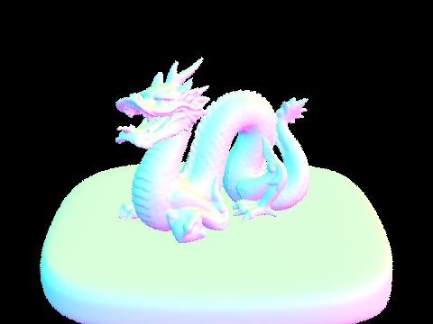
dragon.dae (105,120 triangles)
|
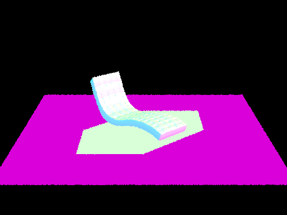
bench.dae (67,808 triangles)
|
To compare the rendering, I took statistics on running full global illumination of 3 scenes with the following
settings:
480×360 resolution, 64 samples per pixel, 4 light rays, max ray depth 5, 12 threads, on a 12-core Apple Silicon
CPU. When recording the times, I only reported the render time, excluding scene loading and BVH construction to
get an
accurate measurement. Looking at the data I have organized in the table below, there is a significant speedup of
using
BVH on the magnitude of 14.5x on the teapot to 78.8x as seen on the beetle. Without BVH, every ray has to be
tested
against every primitive, so the render time grows with the number of triangles, while with BVH the render times
stay
around 1 to 2.5 seconds. This is greatly attributed to the construction of the BVH tree, which lets a ray skip
any node
whose bounding box it misses, giving roughly O(log(n)) traversal down to the nodes that intersect, and by having
leaf nodes
with at most max_leaf_size primitives.
| Scene |
Triangles |
With BVH |
Without BVH |
| teapot |
2,464 |
2.2536 s |
32.7205 s |
| cow |
5,856 |
2.5236 s |
78.2631 s |
| beetle |
7,558 |
1.3064 s |
102.9396 s |
Part 3: Direct Illumination
Now let's worry about actually generating what these scenes actually should look like, this means actually
calculating the amount of light that hits the given point.
First we're gonna start with a somewhat naive approach. For each point that we hit, let's just throw a bunch of
rays out from there and average the amount of light. To do this we sample ray directions in a hemisphere. We
consider these to be around the point on the surface so, we need to translate these from being relative to the
object to relative to the world. Then we see if we intersect anything, and if we do then we calculate the
luminance out as the reflectance of the object, times the emission of the object we hit, times the cosine of the
angle between the normal of the intersection and the direction of the ray, divided by the pdf. Do this for some
n
rays and average the result.
Notably however, most surfaces are not emissive meaning this output
zeroes out. We really only care about sampling rays that hit lights so we can optimize this by instead throwing
rays in the direction of every light. To do this we loop over every light and sample rays that go in the
direction of the light. From here we can see if an intersection exists between the space of just after our
point and just before the light (so plus/minus an \(\epsillon\) being a small float value). If no such intersection happens then light is unoccluded.
Using this we can calculate the amount of light as before.
|
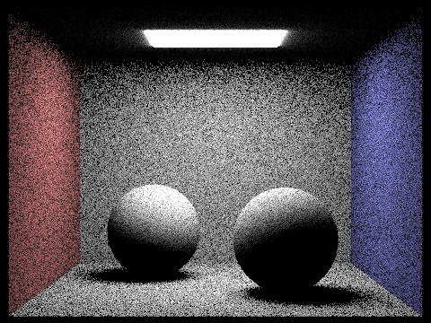
CB Spheres hemisphere
|
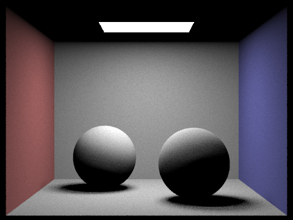
CB Spheres importance
|
|
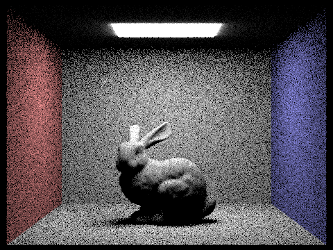
bunny hemisphere
|
bunny light importance
|
|
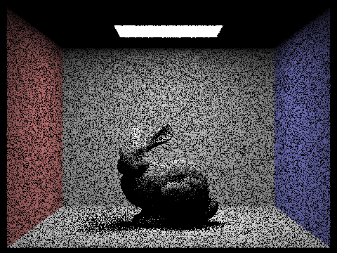
1 ray per light
|
4 rays per light
|
|
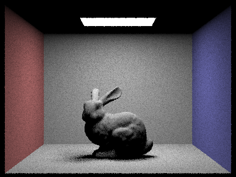
16 rays per light
|
64 rays per light
|
Visibly, images generated with light importance have much less noise. This makes a lot of sense as we are now focusing our efforts into hitting objects that actually emit light rather than quite literally nothing. This also explains the randomish noise pattern as hemisphere sampling was just up to chance if we happened to sample a point on the light or not, now we're guaranteed to at least be aiming at the light.
Part 4: Global Illumination
Now that we have direct lighting at each point what about lighting that comes from other
surfaces? Naturally, light will hit a surface bounce off onto another and then onto our sensor, something we
didn't consider in the last part. To do this we create a recursive function where when we hit a point we collect
the light that hits that point using our direct lighting implementation, then we sample a random direction to using sample_f
bounce to and repeat until we hit our max ray depth. We do this for n bounces summing up the total luminance out. However, this gets extremely
expensive quickly, so we use a technique called Russian Roulette sampling. Effectively we randomly terminate
after at least one ray bounce, I chose the probability of 0.35 for termination. To balance pixels that are randomly sampled more we divide the result by 0.65.
Global illumination with 1024 samples
|
CB Spheres
|
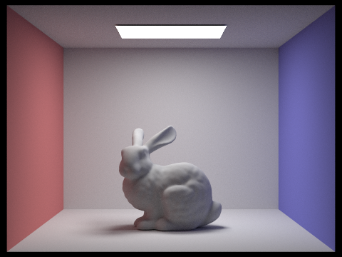
CB Bunny
|
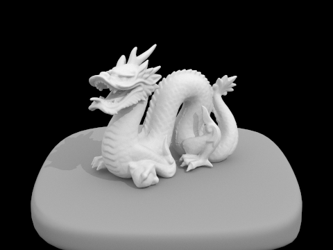
Dragon
|
Direct vs Indirect Illumination
|
Direct
|
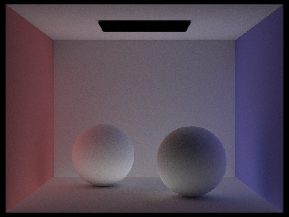
Indirect
|
Ray depths of 0 through 5 accumulated
|
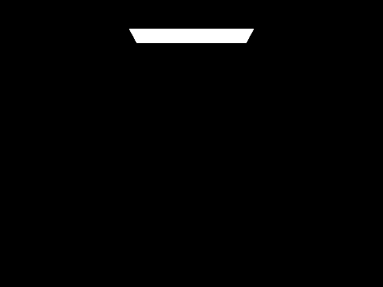
0 bounces
|
1 bounce
|
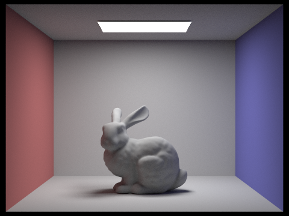
2 bounces
|
|
3 bounces
|
4 bounces
|
5 bounces
|
Ray depths of 0 through 5 not accumulated
|
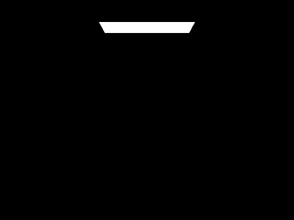
0 bounces
|
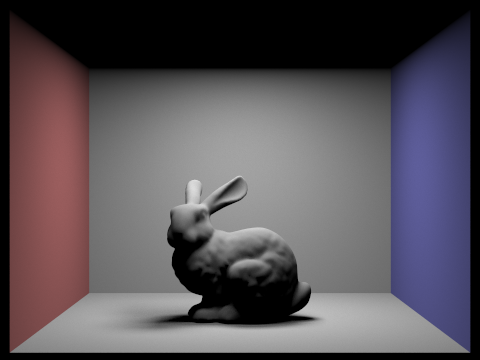
1 bounce
|
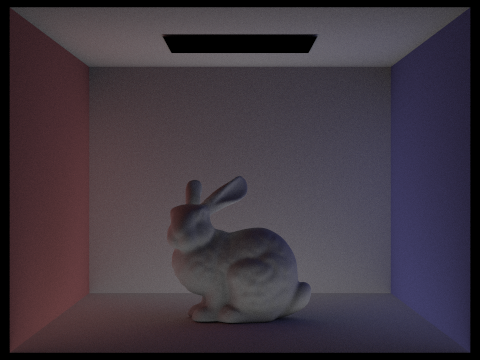
2 bounces
|
|
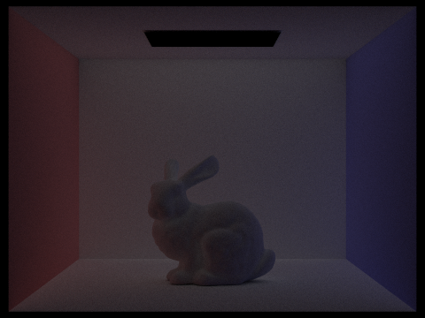
3 bounces
|
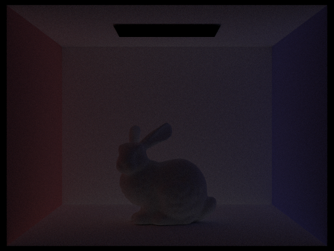
4 bounces
|
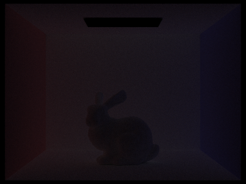
5 bounces
|
Somewhat notably we can see that indirect bounces of light (bounces 2 and onward) provide lots of light to
previously shaded regions (see under the bunny), along with color to white surfaces where the blue or red walls
bounce to (adding a red or blue tint to the floor and ceiling and sides of the bunny).
Russian Roulette
|
0 bounces
|
1 bounce
|
2 bounces
|
|
3 bounces
|
4 bounces
|
100 bounces
|
1, 2, 4, 8, 16, 64, 1024 samples-per-pixel
|
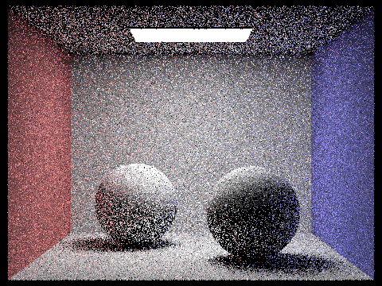
1 sample
|
2 samples
|
4 samples
|
|
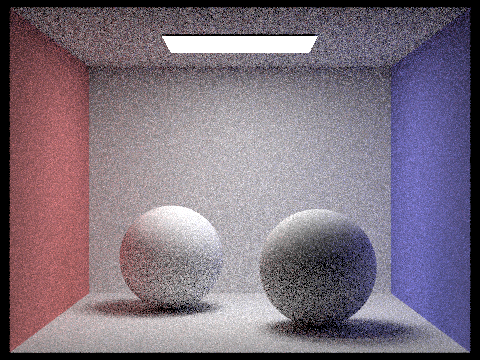
8 samples
|
16 samples
|
64 samples
|
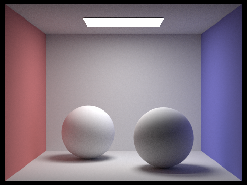
1024 samples
|
Part 5: Adaptive Sampling
From the above we can see that while we are capable of generating very nice results, these results require a lot
of sampling, which takes a lot of time. We can improve this by sampling less on pixels that converge their
illuminance quickly. We can figure out if a pixel's quickly converging by using the standard deviation and the
square root of the number of samples we've taken. We write this as \(I=1.96 \cdot \frac{\sigma}{\sqrt{n}}\)
where if \(I\leq 0.05\mu\) we stop sampling (0.05 is the default max tolerance). This gives us a 95% confidence that the pixel is between \(\mu \pm
I\). So after a set of samples (we define samples per batch which is how often we make this check), we calculate the mean and variance so far and do the check as described above,
and if it succeeds we simply return the radiance of the point thus far.
Red is high and blue is low, rendered at spp=2048 and ray depth of 5.
|
Spheres with adaptive sampling
|
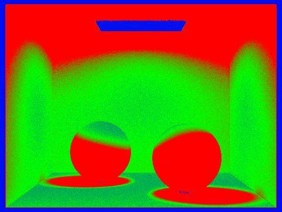
Sampling rate at each area
|
|
Bunny with adaptive sampling
|
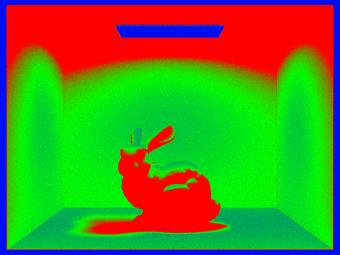
Sampling rate at each area
|
I think rather naturally, shaded regions of the image tend to receive a lot more samples as they recieve a lot of their light from indirect light meaning their radiance probably varies a lot.